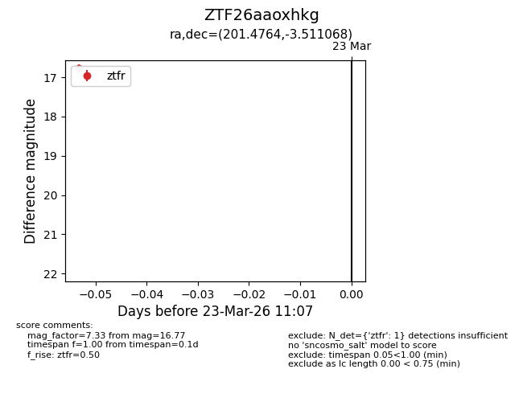
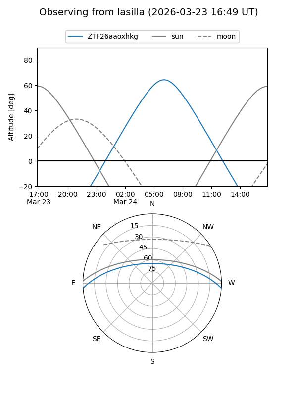
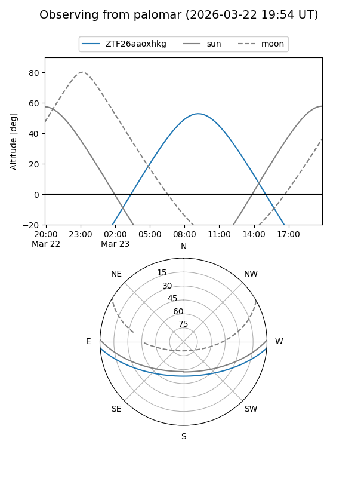

ZTF26aaoxhkg
Target ZTF26aaoxhkg at 2026-03-23 11:09
Aliases and brokers:
FINK: link
Lasair: link
ALeRCE: link
alt names
ZTF26aaoxhkg (ztf,fink_ztf)
Coordinates:
equatorial (ra, dec) = 201.4764,-3.51107
equatorial (HMS+DMS) = 13:25:54.34,-03:30:39.85
galactic (l, b) = (319.4432,+58.25142)
Flags:
Photometry:
last ztfr=16.77
1 ztfr detections
Lightcurve

Visibility


Additional plots